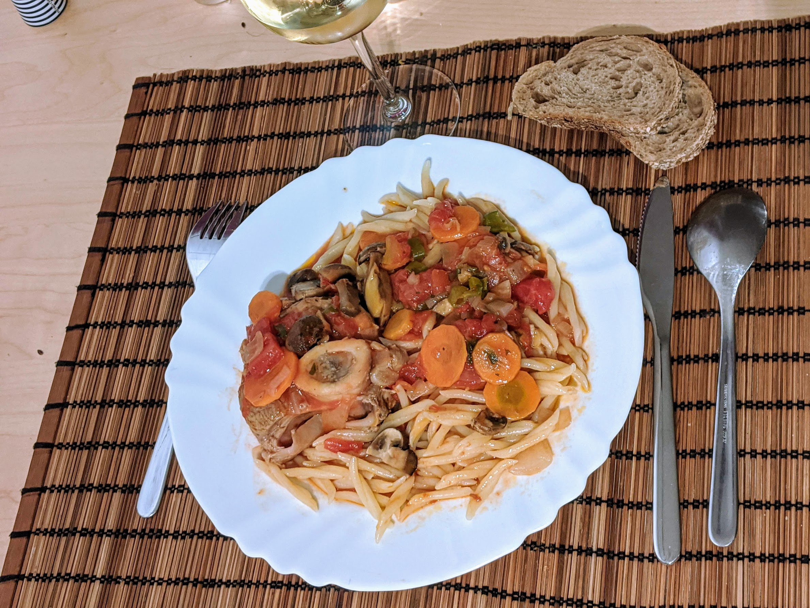

Osso bucco

Pour 4-5 personnes :
- 700-800g de jarret de veau
- Un oignon
- 2 échalotes
- Une ou deux gousses d'ail
- 20cl de vin blanc
- Du persil (haché)
- De la farine
- 20cl de bouillon de volaille ou de bœuf
- Une grosse boîte de tomates pelées (concassées ou non), ou 25g de concentré de tomates.
- (facultatif) 100g de champignons
- (facultatif) 3-4 carottes
- Un bouquet garni
- Huile d'olive, beurre, sel, poivre
- Faire dorer la moitié de l'oignon découpé en tranches et la viande dans un mélange d'huile d'olive et de beurre (ou de saindoux, ou de margarine), au fond d'une cocotte.
- Lorsque la viande est à moitié dorée, ajouter le reste de l'oignon, les échalotes découpées finement, l'ail écrasé, et le persil haché. Saupoudrer de farine, laisser blondir.
- Une fois que la viande est bien colorée, saler, poivrer, ajouter le vin blanc, le bouillon, le bouquet garni et (le cas échéant) les carottes coupées en fines tranches.
- Au bout d'une heure de cuisson à feu moyen, ajouter les tomates et (le cas échéant) les champignons.
- Laisser cuire une bonne demi-heure de plus, servir en retirant le bouquet garni. Servir avec des petites pâtes.
Retour à la liste des recettes